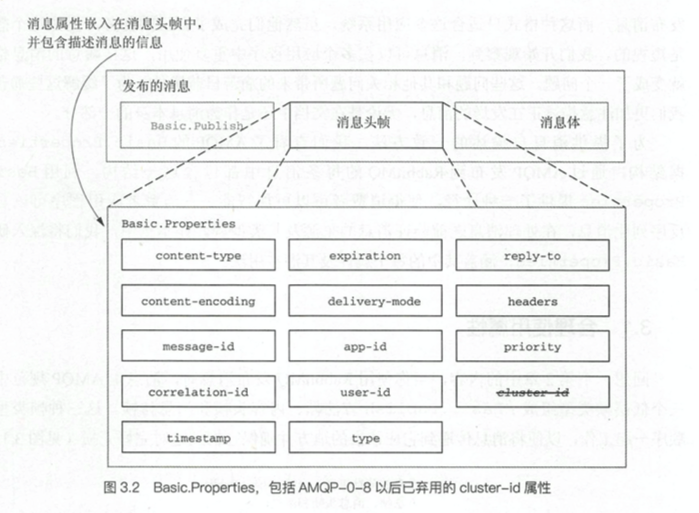
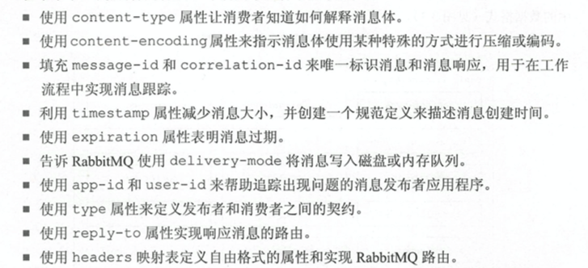
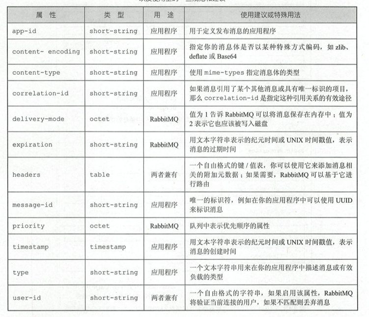
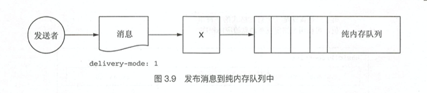
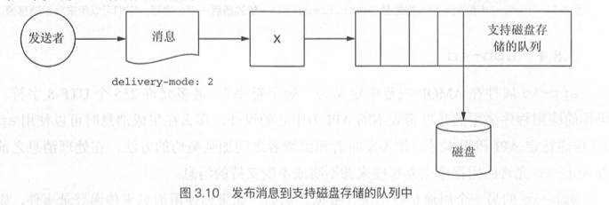
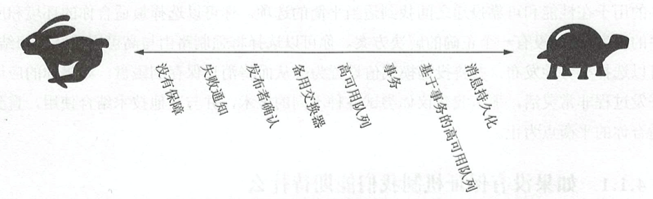
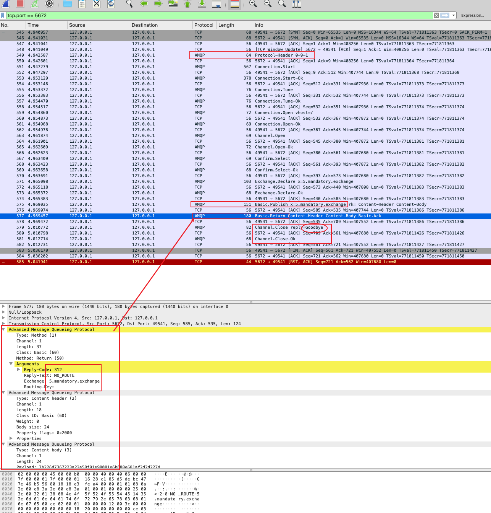
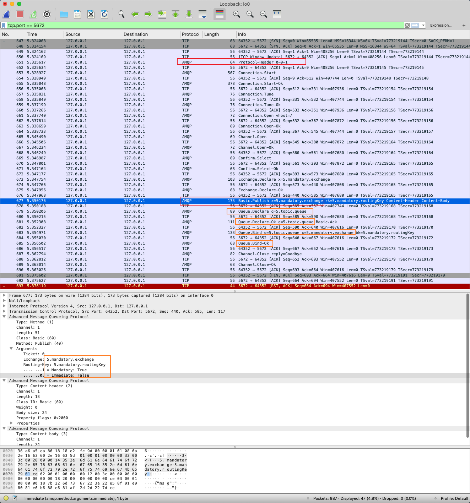

夫大人者，与天地合其德，与日月合其明，与四时合其序，与鬼神合其吉凶。（《周易·䷀乾·文言》）
网上有很多确保消息100%投递相关的文章，但总的来说还是分为几种情况的
发送端如何确保发送到了交换机
消费端针对不同情况处理消息–后续再说
本文围绕发布者100%投递 相关内容，主要包含
消息属性详解 { fields: { consumerTag: 'amq.ctag-_zo-n-crGPvrunQmICBoqA' , deliveryTag: 1 , redelivered: false , exchange: 'delayed-exchange' , routingKey: 'delayed-routingKey' }, properties: { contentType: undefined, contentEncoding: undefined, headers: { 'x-delay' : 1000 , 'x-death' : [Array] }, deliveryMode: undefined, priority: undefined, correlationId: undefined, replyTo: undefined, expiration: undefined, messageId: undefined, timestamp: undefined, type: undefined, userId: undefined, appId: undefined, clusterId: undefined }, content: <Buffer 7 b 22 6 d 73 67 22 3 a 32 2 c 22 74 74 6 c 22 3 a 31 30 30 30 7 d> }


字段
类型
说明
content-type
消息体类型HIMI类型
如：application/ json
content-encodeing
压缩消息
如：utf8
message-id
应用级别，跟踪消息的流动情况如销售订单或支持类请; 允许255个字节的utf8
correlation-id
应用级别，跟踪消息的流动情况如：传送关联消息的事务ID或其他类似数据；允许255个字节的utf8
timestamp 应用级别如：诊断消息发生意外、性能、是否处理-丢弃、监控报警等
expiration 消息自动过期, 整数或整数时间戳的 字符串
注意
delivery-mode 是否持久化
1 表示非持久化消息， 2 表示持久化消息
app-id
收集统计数据，如校验版本、平台
如追踪恶意消息
user-id
识别用户，根据业务判断是否使用
type 消息类型名称
如：不采用json,采用protobuf,就可以不必自行设置type，在次设置传输即可
reply-to
使用 reply-to 可以构建一个用来回复消息的私有响应队列
“在请 求消息中使用私有响应队列时 ， 它可以保存私有响应队 列的名称” 。 这个定义中 有太 多的不明确性，所以应该谨慎使用这个属性。
headers
自定义头
根据需要设置key-value即可
priority 优先级
0-9之间的整数

消息持久化 VS 队列持久化
消息的 delivery-mode 才 会向 RabbitMQ 指定消息是否应该被持久化
队列的持久性属性告诉 RabbitMQ 队列的定 义在 重新启 动 RabbitMQ 服务器或群集之后是否仍然有效
队列可能包含持久化 和未持久化 的消息；
delivery-mode 指定为 1 将会尽可能降低消息投递的延迟性。侧重：速度，即便丢失不影响业务 侧重：可靠，非速度


生产端 投递速度 VS 可靠性 
消费发布时保证消息进入队列的重要性 有多高？
如果消息无法路由，是否应将消息返回给发布者？
如果消息无法路由，是否应该将其发送到其他地方稍后进行重新路由？
如果 RabbitMQ 服务器崩溃 ，可以接受信息丢失吗？
RabbitMQ 在处理新消息时是否应该确认 它已经为发布者执行了所有请求的路由和持久化任务？
消息发布者是否可以批量投递消息，然后从 RabbitMQ 收到一个确认用于表明所有请求的路由和持久化任务己经批量应用到所有的消息中？
如果你要批量发布消息，而这些消息需要确认路由和持久化，那么对每一条消息是否需要对目标队列实现真正意义上的原子提交？
在可靠投递方面是否有可接受的平衡性，你的发布者可以使用它来实现更高的性能和消息吞吐量吗 ？
消息发布还有哪些方面会影响消息吞吐量和性能？
ConfirmChannel 回调 (async function testConfirmChannel ( const url = `amqp://localhost` ; const connect = await amqp.connect(url) let index = 0 ; while (index < 4 ) { index++; await retryTest(index, 3 ); } async function retryTest (index: number, retryTime: number ) try { console .log(`发送消息${index} ` ); await publish(`发送消息${index} ` , connect); } catch (error) { if (retryTime > 0 ) { await sleep(3 ); console .log(`${index} 重试, 次数为${retryTime} ` ) await retryTest(index, retryTime - 1 ) } else { console .error(`🚩🚩🚩 ${index} 需要特殊处理` ); } } } process.exit(0 ); })();
async function publish (msg: string, connect: amqp.Connection ) const exchange = '5.confirm.exchange' ; const exchangeType = 'direct' ; const routingKey = '5.confirm.routingKey' ; const channel = await connect.createConfirmChannel(); await channel.assertExchange(exchange, exchangeType, { durable : false }) const content = JSON .stringify({ msg }); const random = Math .random() < 0.4 ; console .log('随机出现❌' , random); if (random) { channel.close() } channel.publish(exchange, routingKey, Buffer.from(content), {}, (err, ok) => { if (err !== null ) { console .log('发布消息-交换机-失败' , err); } else { console .log('发布消息-交换机-确认' , err, ok, content); } }); await channel.waitForConfirms() await channel.close(); }
➜ git:(main) ✗ ts-node send.ts 发送消息1 随机出现❌ false 发布消息-交换机-确认 null undefined {"msg" :"发送消息1" } 发送消息2 随机出现❌ false 发布消息-交换机-确认 null undefined {"msg" :"发送消息2" } 发送消息3 随机出现❌ false 发布消息-交换机-确认 null undefined {"msg" :"发送消息3" } 发送消息4 随机出现❌ false 发布消息-交换机-确认 null undefined {"msg" :"发送消息4" }
➜ 6test git:(main) ✗ ts-node send.ts 发送消息1 随机出现❌ false 发布消息-交换机-确认 null undefined {"msg" :"发送消息1" } 发送消息2 随机出现❌ true 发布消息-交换机-失败 Error: channel closed at ConfirmChannel.<anonymous> (/Users/mw/Desktop/Github/Integration/Rabbitmq/node_modules/amqplib/lib/channel.js:39:18) ... at process._tickCallback (internal/process/next_tick.js:63:19) 2重试, 次数为3 发送消息2 随机出现❌ true 发布消息-交换机-失败 Error: channel closed at ConfirmChannel.<anonymous> (/Users/mw/Desktop/Github/Integration/Rabbitmq/node_modules/amqplib/lib/channel.js:39:18) ... at process._tickCallback (internal/process/next_tick.js:63:19) 2重试, 次数为2 发送消息2 随机出现❌ true 发布消息-交换机-失败 Error: channel closed at ConfirmChannel.<anonymous> (/Users/mw/Desktop/Github/Integration/Rabbitmq/node_modules/amqplib/lib/channel.js:39:18) ... at process._tickCallback (internal/process/next_tick.js:63:19) 2重试, 次数为1 发送消息2 随机出现❌ false 发布消息-交换机-确认 null undefined {"msg" :"发送消息2" } 发送消息3 随机出现❌ false 发布消息-交换机-确认 null undefined {"msg" :"发送消息3" } 发送消息4 随机出现❌ false 发布消息-交换机-确认 null undefined {"msg" :"发送消息4" }
Mandatory 当mandatory 标志位设置为true时，如果exchange根据自身类型和消息routeKey无法找到一个符合条件的queue，那么会调用basic.return方法将消息返回给生产者（Basic.Return + Content-Header + Content-Body）；当mandatory设置为false时，出现上述情形broker会直接将消息扔掉。
The immediate and mandatory fields are part of the AMQP specification, and are also covered in the RabbitMQ FAQ to clarify how its implementers interpreted their meaning:
Mandatory
This flag tells the server how to react if a message cannot be routed to a queue. Specifically, if mandatory is set and after running the bindings the message was placed on zero queues then the message is returned to the sender (with a basic.return). If mandatory had not been set under the same circumstances the server would silently drop the message.
Or in my words, "Put this message on at least one queue. If you can't, send it back to me."
CODE-发布失败 async function publish (msg: string, connect: amqp.Connection ) const exchange = '5.mandatory.exchange' ; const exchangeType = 'direct' ; const routingKey = '5.mandatory.routingKey' ; const channel = await connect.createConfirmChannel(); await channel.assertExchange(exchange, exchangeType, { durable : false }) const content = JSON .stringify({ msg }); channel.publish(exchange, '' , Buffer.from(content), { mandatory : true }, (err, ok) => { if (err !== null ) { console .log('发布消息-交换机-失败' , err); } else { console .log('发布消息-交换机-确认' , err, ok, content); } }); channel.on('return' , (args)=>{ console .log("return: " , args); }) channel.on('error' , (args)=>{ console .log("error: " , args); }) channel.on('close' , (args)=>{ console .log("close: " , args); }) await channel.waitForConfirms() await channel.close(); }
return : { fields : { replyCode : 312 , replyText: 'NO_ROUTE' , exchange: '5.mandatory.exchange' , routingKey: '' }, properties: { contentType : undefined , contentEncoding: undefined , headers: {}, deliveryMode: undefined , priority: undefined , correlationId: undefined , replyTo: undefined , expiration: undefined , messageId: undefined , timestamp: undefined , type: undefined , userId: undefined , appId: undefined , clusterId: undefined }, content: <Buffer 7 b 22 6 d 73 67 22 3 a 22 e5 8 f 91 e9 80 81 e6 b6 88 e6 81 af 2 d 2 d 22 7 d> } 发布消息-交换机-确认 null undefined {"msg" :"发送消息--" } close: undefined

CODE-发布成功 async function publish (msg: string, connect: amqp.Connection ) const exchange = '5.mandatory.exchange' ; const exchangeType = 'direct' ; const routingKey = '5.mandatory.routingKey' ; const queueName = '5.topic.queue' const channel = await connect.createConfirmChannel(); await channel.assertExchange(exchange, exchangeType, { durable : false }) const content = JSON .stringify({ msg }); channel.publish(exchange, routingKey, Buffer.from(content), { mandatory : true }, (err, ok) => { if (err !== null ) { console .log('发布消息-交换机-失败' , err); } else { console .log('发布消息-交换机-确认' , err, ok, content); } }); const queueA = await channel.assertQueue(queueName); await channel.bindQueue(queueA.queue, exchange, routingKey); channel.on('return' , (args)=>{ console .log("return: " , args); }) channel.on('error' , (args)=>{ console .log("error: " , args); }) channel.on('close' , (args)=>{ console .log("close: " , args); }) await channel.waitForConfirms() await channel.close(); }
返回值
✗ ts-node 2mandatory.ts 发布消息-交换机-确认 null undefined {"msg" :"发送消息--" } close: undefined
想模拟错误❌真的难，终于复现错误解决问题，Nice!

备份交换机 async function publish (msg: string, connect: amqp.Connection ) const exchange = '5.alternate.exchange' ; const exchangeType = 'direct' ; const routingKey = '5.alternate.routingKey' ; const queueName = '5.alternate.queue' const exchangeBak = '5.alternate.bak.exchange' ; const exchangeBakType = 'fanout' ; const exchangeBakQueue = '5.alternate.bak.queue' ; const exchangeBakRouter = '5.bak' ; const channel = await connect.createConfirmChannel(); await channel.assertExchange(exchange, exchangeType, { alternateExchange : exchangeBak }) const content = JSON .stringify({ msg }); channel.publish(exchange, routingKey, Buffer.from(content), { mandatory : true }, (err, ok) => { if (err !== null ) { console .log('发布消息-交换机-失败' , err); } else { console .log('发布消息-交换机-确认' , err, ok, content); } }); await channel.assertExchange(exchangeBak, exchangeBakType); const queueBak = await channel.assertQueue(exchangeBakQueue) await channel.bindQueue(queueBak.queue, exchangeBak, exchangeBakRouter); channel.on('return' , (args)=>{ console .log("return: " , args); }) channel.on('error' , (args)=>{ console .log("error: " , args); }) channel.on('close' , (args)=>{ console .log("close: " , args); }) await channel.waitForConfirms() await channel.close(); }
 夫大人者，与天地合其德，与日月合其明，与四时合其序，与鬼神合其吉凶。（《周易·䷀乾·文言》）
夫大人者，与天地合其德，与日月合其明，与四时合其序，与鬼神合其吉凶。（《周易·䷀乾·文言》）